クラスター分析
クラスター分析は、観測つまりオブジェクトの類似度と非類似度を検討する方法です。データはしばしば観測のグループ、つまりクラスターに自然に分類されます。そこでは、同じクラスター内のオブジェクトの特性は類似しており、別のクラスター内のオブジェクトの特性は異なります。
これは、Statistics Toolbox™ を使ってクラスター分析をどのように実行するかを示すデモです。
目次
K 平均クラスタリングと階層クラスタリング
Statistics Toolbox には、K 平均クラスタリングと階層クラスタリングという 2 種類のクラスター分析を実行するための関数があります。
K 平均クラスタリングとは、データ内の観測を位置と互いからの距離を持つオブジェクトとして扱う分割法の一種です。K 平均クラスタリングでは、オブジェクトを k 個の互いに排他的なクラスターに分割します。同じクラスター内のオブジェクトはできるだけ近くに、別のクラスター内のオブジェクトからはできるだけ遠くにあるように分割します。各クラスターは重心、つまり中心となる点で特徴付けられます。もちろん、クラスタリングで使用される距離が空間的距離を表すことはまれです。
階層クラスタリングは、クラスター木を作成することにより、さまざまな距離のスケールで同時にユーザー データのグループ化を調べる方法です。この木は、K 平均とは異なり、複数のクラスターで構成される 1 つの集合ではなく、ある 1 つのレベルに存在する複数のクラスターがまとまって次の 1 段高いレベルでクラスターとなる複数レベルの階層です。これにより、クラスタリングのどのレベルまたはスケールがユーザー アプリケーションにおいて最適であるかを決定することが可能になります。
例で使用される一部の関数は、MATLAB® の組み込み乱数生成関数を呼び出します。このデモで示される結果とまったく同じ結果を得るには、以下のコマンドを実行して、乱数発生器を既知の状態に設定する必要があります。状態を設定しないと、些細な点で結果が異なる可能性があります。たとえば、クラスター番号が変わってしまうかもしれません。また、最適とは言えないクラスター解を得ることになる可能性もあります (デモでは最適とは言えない解やそれらを回避する方法などについての議論が行われます)。
seed = 931316785; rand('seed',seed); randn('seed',seed);
フィッシャーのアヤメのデータ
1920 年代に植物学者たちは、アヤメの標本 150 個 (3 種について 50 個ずつ) のがく片の長さと幅、花弁の長さと幅に関する測定値を収集しました。この測定値は、「フィッシャーのアヤメのデータ」として知られるようになりました。
このデータの各観測は、1 つの既知種に由来するので、データをグループ化するための明らかな方法が既に存在することになります。差し当たり、種情報は無視して、生の測定値だけを使用してデータをクラスター化することにします。完了したら、結果として得られたクラスターと実際の種を比較し、3 種類のアヤメに明確に識別できる特徴があるかどうかを調べます。
K 平均クラスタリングを使用するフィッシャーのアヤメのデータのクラスタリング
関数 kmeans は K 平均クラスタリングを実行します。その際、オブジェクトをクラスターに割り当てる反復アルゴリズムを使用して、すべてのクラスターについて各オブジェクトからそのクラスターの重心までの距離の総和を最小にします。この関数をフィッシャーのアヤメのデータに対して実行すると、アヤメの標本ががく片と花弁の測定値に基づいていくつかのグループに自然に分けられます。K 平均クラスタリングでは、作成するクラスターの数を指定しなければなりません。
最初に、データを読み込み、関数 kmeans を呼び出します。その際、目的のクラスター数を 2 に設定し、ユークリッド距離の二乗を使用します。結果のクラスターがいかにうまく分離されるかについて知るには、シルエット プロットを作成します。シルエット・プロットは、1個のクラスター中の各点が近隣のクラスター中の点にどれくらい接近してあるかの基準を表示します。
load fisheriris [cidx2,cmeans2] = kmeans(meas,2,'dist','sqeuclidean'); [silh2,h] = silhouette(meas,cidx2,'sqeuclidean');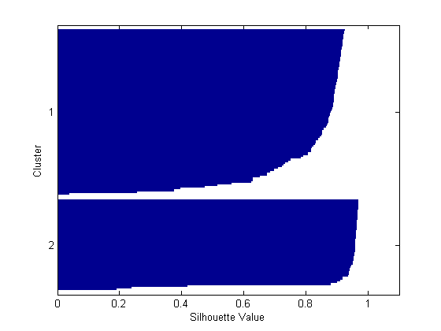
シルエット プロットから、両方のクラスターの大部分の点が 0.8 よりも大きい大きなシルエットの値を持つことがわかります。これは、それらの点が近隣するクラスターから十分に離れていることを示します。ただし、各クラスターにはシルエット値が低い点もいくつか含まれています。これは、それらの点が他のクラスターの点に近いことを示します。
このデータの 4 番目の測定値である花弁の幅は、3 番目の測定値である花弁の長さと高い相関関係を示しています。したがって、最初の 3 つの測定値の 3 次元プロットは、次元数を 4 にしなくてもデータをうまく表現することになります。関数 kmeans によって作成されるクラスターごとに別の記号を使用してデータをプロットする場合には、シルエット値が小さい点は他のクラスターの点に近い点であるとわかります。
ptsymb = {'bs','r^','md','go','c+'};
for i = 1:2
clust = find(cidx2==i);
plot3(meas(clust,1),meas(clust,2),meas(clust,3),ptsymb{i});
hold on
end
plot3(cmeans2(:,1),cmeans2(:,2),cmeans2(:,3),'ko');
plot3(cmeans2(:,1),cmeans2(:,2),cmeans2(:,3),'kx');
hold off
xlabel('Sepal Length'); ylabel('Sepal Width'); zlabel('Petal Length');
view(-137.10);
grid on

各クラスターの重心は、円で囲んだ X でプロットされます。低いクラスターの 3 点は、三角形でプロットされ、正方形でプロットされる上のクラスターの点に非常に近い点です。しかし実際には、上のクラスターは広い範囲に広がっているので、これらの 3 点は上のクラスターの重心よりむしろ低いクラスターの重心に近い位置に存在することになります。これは、ギャップによりクラスター内での点の塊から離れている場合でも当てはまります。K 平均クラスタリングでは、距離だけを考慮し密度は考慮されないので、このような結果が生じることがあります。
クラスター数を増やして、関数 kmeans がデータ内でグループ化構造をさらに見つけることができるかどうかを調べることができます。今回は、クラスラリング アルゴリズムでオプションの'display'パラメーターを使用して、各反復に関する情報を出力します。
[cidx3,cmeans3] = kmeans(meas,3,'display','iter');
iter phase num sum
1 1 150 181.828
2 1 23 92.2739
3 1 7 80.4678
4 1 3 79.054
5 1 1 78.8514
6 2 0 78.8514
6 iterations, total sum of distances = 78.8514
反復ごとに、kmeans アルゴリズムは点をクラスター間で再度割り当てて、点と重心間距離の総和を減らしてから、新しいクラスター割り当てのクラスター重心を計算し直します。距離の総和と再割り当て回数は、アルゴリズムが最小値に到達するまで、反復ごとに減少していくことに注意してください。関数 kmeans で使用されるアルゴリズムは、2 段階で構成されます。前の例では、アルゴリズムの第 2 段階で再割り当てがまったく行われませんでした。これは、5 回反復した後に第 1 段階で最小値に達したことを示しています。
既定の設定では、関数 kmeans は無作為に選択された初期の重心位置の集合を使用して処理を開始します。数値的な最小化の他の多くの場合のように、関数 kmeans が到達することがある解は、出発点に依存します。そして、この関数が局所的な最小値に到達することは可能です。この場合、任意の 1 点を新しいクラスターに再び割り当てると、点と重心間距離の総和が増加しますが、より適切な解は確かに存在します。しかし、その問題を解決するためには、オプションのパラメータ'replicates' を使用することができます。複数回反復するよう指定すると、関数 kmeans は 1 回ごとに無作為に選択されたさまざまな重心からクラスタリング処理を繰り返します。
[cidx3,cmeans3,sumd3] = kmeans(meas,3,'replicates',5,'display','final');
7 iterations, total sum of distances = 78.8514 6 iterations, total sum of distances = 78.8514 5 iterations, total sum of distances = 78.8514 6 iterations, total sum of distances = 142.754 5 iterations, total sum of distances = 78.8514
出力は、この比較的簡単な問題に対してさえ、大域的でない最小が存在することを示します。この 5 回の繰り返しのそれぞれは、別の初期重心の集合から開始されました。出発点に応じて、関数 kmeans は 2 つの異なる解のどちらかに到達しました。しかし、kmeans が返す最終的な解は、繰り返しの全体にわたって、距離の総和の最小を持ちます。3 番目の出力引数には、その最適解について各クラスター内での距離の総和が格納されます。
sum(sumd3)
ans = 78.8514
この 3 クラスター解のシルエット プロットは、十分に離れたクラスターが 1 つ存在するが、他の 2 つのクラスターはあまり離れていないことを示しています。
[silh3,h] = silhouette(meas,cidx3,'sqeuclidean');
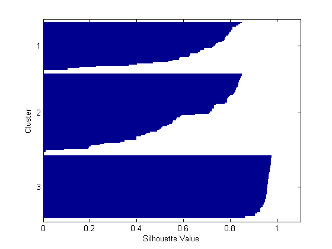 ここで再度、生データをプロットして、関数 kmeans が点をクラスターに割り当てる様子を確認します。
for i = 1:3 clust = find(cidx3==i); plot3(meas(clust,1),meas(clust,2),meas(clust,3),ptsymb{i}); hold on end plot3(cmeans3(:,1),cmeans3(:,2),cmeans3(:,3),'ko'); plot3(cmeans3(:,1),cmeans3(:,2),cmeans3(:,3),'kx'); hold off xlabel('Sepal Length'); ylabel('Sepal Width'); zlabel('Petal Length'); view(-137.10); grid on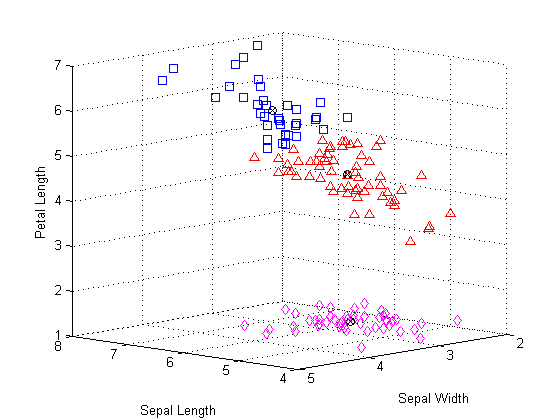
関数 kmeans が上のクラスターを 2 クラスター解から分離したこと、およびこの 2 つのクラスターが互いに非常に近い位置にあることがわかります。クラスタリング後にこのデータで何を行うのかに応じて、この 3 クラスター解が前の 2 クラスター解より便利なのかそれとも不便なのかが決まります。関数 silhouette の最初の出力引数には、各点のシルエット値が格納されます。これを使用して 2 つの解を定量的に比較することができます。2 クラスター解の平均シルエット値は大きかったのですが、これは、離れたクラスターを作成するという観点から純粋に見て、より優れた解であることを示しています。
[mean(silh2) mean(silh3)]
ans =
0.8504 0.7357
これらのデータを別の距離でクラスター化することもできます。これらのデータでは、コサイン距離を使用するのが理にかなうかもしれません。測定値の絶対サイズは無視され、相対サイズだけが考慮されるからです。したがって、がく片と花弁のサイズは異なっていても形状が似ていた 2 本の花は、ユークリッド距離の二乗に関しては近くないかもしれませんが、コサイン距離に関しては近いと言えます。
[cidxCos,cmeansCos] = kmeans(meas,3,'dist','cos');
シルエット プロットから考えて、これらのクラスターは、ユークリッド距離の二乗を使用して見つかったクラスターよりもわずかに離れているように思われます。
[silhCos,h] = silhouette(meas,cidxCos,'cos');
[mean(silh2) mean(silh3) mean(silhCos)]
ans =
0.8504 0.7357 0.7491
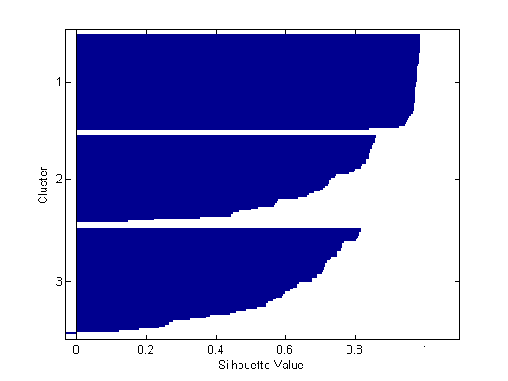 クラスターの順序が前のシルエット プロットとは異なることに注意してください。これは、関数 kmeans が初期クラスター割り当てを無作為に選択するからです。
生データをプロットすることにより、2 つの異なる距離を使用して作成されたクラスター形状の違いを確認することができます。この 2 つの解は似ていますが、2 つの上のクラスターはコサイン距離を使用するときの原点の向きに延長されます。
for i = 1:3 clust = find(cidxCos==i); plot3(meas(clust,1),meas(clust,2),meas(clust,3),ptsymb{i}); hold on end hold off xlabel('Sepal Length'); ylabel('Sepal Width'); zlabel('Petal Length'); view(-137.10); grid on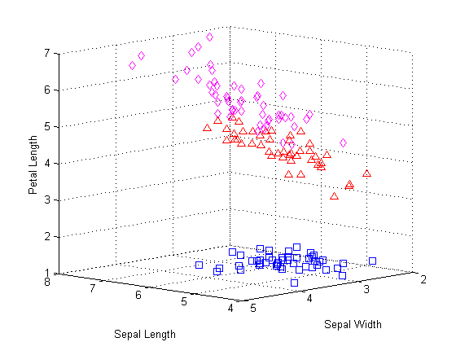
このプロットにはクラスターの重心は含まれません。コサイン距離に関する重心は、生データ空間の原点から伸びる半直線に対応するからです。ただし、正規化されたデータ ポイントの平行座標プロットを作成して、クラスター重心間の違いを可視化することができます。
lnsymb = {'b-','r-','m-'};
names = {'SL','SW','PL','PW'};
meas0 = meas ./ repmat(sqrt(sum(meas.^2,2)),1,4);
ymin = min(min(meas0));
ymax = max(max(meas0));
for i = 1:3
subplot(1,3,i); plot(meas0(cidxCos==i,:)',lnsymb{i});
hold on; plot(cmeansCos(i,:)','k-','LineWidth',2); hold off;
title(sprintf('Cluster %d',i));
set(gca,'Xlim',[.9 4.1],'XTick',1:4,'XTickLabel',names,'YLim',[ymin ymax])
end
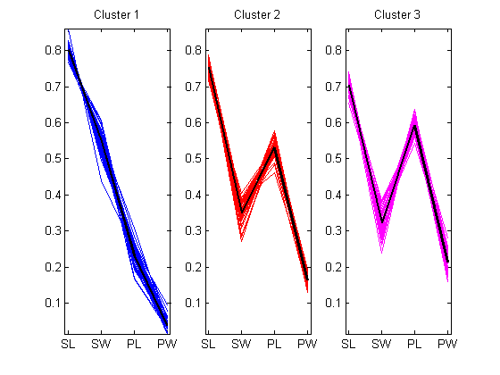 このプロットから、3 つのクラスターそれぞれの標本のがく片と花弁は、平均して相対サイズが明らかに異なります。最初のクラスターには、花弁より明らかに小さいがく片があります。2 番目の 2 つのクラスターのがく片と花弁は、サイズに関して部分的に重なり合いますが、3 番目のクラスターのがく片と花弁の方が、2 番目より大きく重なり合っています。また、2 番目と 3 番目のクラスターには互いに非常に似通った標本がいくつかあるということもわかります。
データ内の各観測の種を知っているので、関数 kmeans が発見したクラスターと実際の種を比較して、3 種に見分けがつくほど固有の物理的な特徴があるかどうかを確認することができます。実際のところ、次のプロットが示すとおり、コサイン距離を使用して作成されたクラスターは、種グループとわずかに 5 本の花しか違いません。この 5 つの点は星型でプロットされており、すべて上の 2 つのクラスターの境界付近にあります。
subplot(1,1,1) ; for i = 1:3 clust = find(cidxCos==i); plot3(meas(clust,1),meas(clust,2),meas(clust,3),ptsymb{i}); hold on end xlabel('Sepal Length'); ylabel('Sepal Width'); zlabel('Petal Length'); view(-137.10); grid on sidx = grp2idx(species); miss = find(cidxCos ~= sidx); plot3(meas(miss,1),meas(miss,2),meas(miss,3),'k*'); legend({'setosa','versicolor','virginica'},1); hold off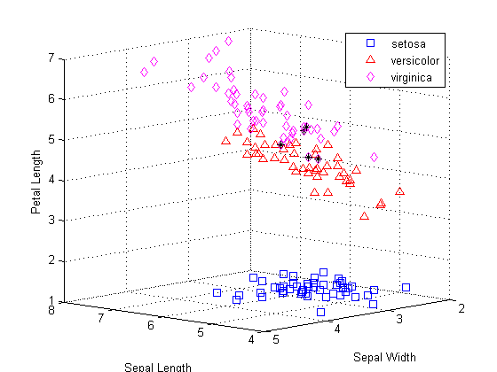
階層クラスタリングを使用するフィッシャーのアヤメのデータのクラスタリング
K 平均クラスタリングでは、アヤメのデータの区分が 1 つしか生成されませんでしたが、データのグループ化のスケールをいろいろに変えて調べてみたいと思うかもしれません。階層クラスタリングを使用すると、複数のクラスターで構成される階層木を 1 つ作成することによりそうすることができます。
最初に、アヤメのデータでの観測間の距離を使用してクラスター木を作成します。ユークリッド距離を使用して開始します。
eucD = pdist(meas,'euclidean'); clustTreeEuc = linkage(eucD,'average');
共表形相関は、クラスター木が元の距離に一致していることを確認するための方法の 1 つです。値が大きい場合、それは観測間の 2 つ 1 組の関連性が実際のペアワイズ距離と相関しているという意味で、木が距離をよく近似していることを示しています。この木は、距離をかなりよく近似しているようです。
cophenet(clustTreeEuc,eucD)
ans =
0.8770
クラスターの階層を可視化するには、デンドログラムをプロットします。
[h,nodes] = dendrogram(clustTreeEuc,0); set(gca,'TickDir','out','TickLength',[.002 0],'XTickLabel',[]);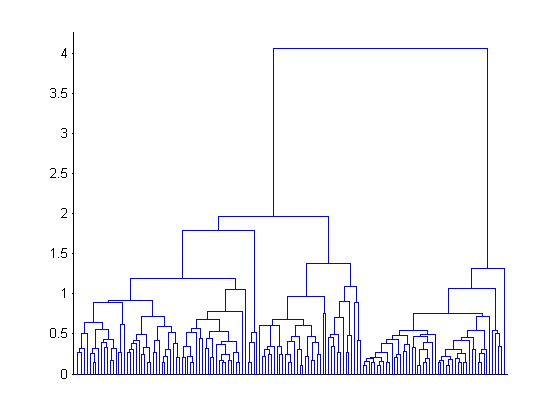
この木のルート ノードは、残りのノードよりはるかに高い位置にあります。これは、K 平均クラスタリングでの結果を裏付けています。つまり、2 つの大きい異なる観測グループが存在するということです。この 2 つのグループそれぞれで、距離のスケールを下げるにつれて、低レベルのグループが現れてくるのがわかります。レベル、サイズ、および相違度がさまざまに異なるグループがたくさんあります。
K 平均クラスタリングの結果に基づいて考えると、距離の測定法としてコサインも有望な選択肢かもしれません。結果として得られる階層木はまったく異なるものであり、これはアヤメのデータのグループ構造を見るまったく別の方法があることを示唆しています。
cosD = pdist(meas,'cosine'); clustTreeCos = linkage(cosD,'average'); cophenet(clustTreeCos,cosD)
ans =
0.9360
[h,nodes] = dendrogram(clustTreeCos,0); set(gca,'TickDir','out','TickLength',[.002 0],'XTickLabel',[]);

この木の最高レベルにより、アヤメの標本が 2 つの非常に異なるグループに分けられます。この図には、コサイン距離に関して、グループ間の違いと比較してグループ内の違いがユークリッド距離の場合よりはるかに小さいことが示されています。これこそまさに、このデータでは当然の結果と言えます。コサイン距離では原点から同じ "向き" にあるオブジェクトのゼロ対距離を計算するからです。
150 個の観測では、プロットが乱れますが、木の最低レベルを表示しない単純化されたデンドログラムを作成することができます。
[h,nodes] = dendrogram(clustTreeCos,12);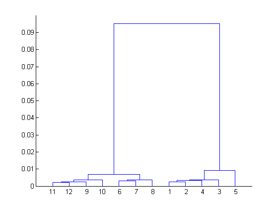
木内にある 3 つの最高に高いノードによって、3 つのサイズが等しいグループおよび他のいずれにも近くない 1 つの標本 (ラベル表示はリーフ ノード 5) に分けられます。
[sum(ismember(nodes,[11 12 9 10])) sum(ismember(nodes,[6 7 8])) ...
sum(ismember(nodes,[1 2 4 3])) sum(nodes==5)]
ans =
54 46 49 1
たいていの場合には、デンドログラムが十分な結果となります。もっとも、さらに 1 歩進んで関数 cluster を使用して、木を切り分け、K 平均の場合のように観測を特定のクラスターに明示的に分割することもできます。クラスターを作成するためのコサイン距離に基づく階層を使用しながら、3 つの最も高いノードの下で木を切る関連性の高さを指定し、クラスターを 4 つ作成し、クラスター化された生データをプロットします。
hidx = cluster(clustTreeCos,'criterion','distance','cutoff',.006); for i = 1:5 clust = find(hidx==i); plot3(meas(clust,1),meas(clust,2),meas(clust,3),ptsymb{i}); hold on end hold off xlabel('Sepal Length'); ylabel('Sepal Width'); zlabel('Petal Length'); view(-137.10); grid on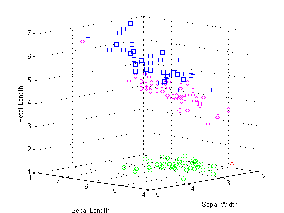
このプロットは、コサイン距離を使用する階層クラスタリングの結果が、K 平均クラスタリングの結果と定性的に類似していることを 3 つのクラスターで示しています。ただし、階層的クラスター木を作成することにより、K平均クラスタリングにおいて K の値をさまざまに変えて実験をかなり繰り返し実行しなければならないようにする要因を一度に可視化することができます。
階層クラスタリングでは、関連性をさまざまに変えて実験することもできます。たとえば、アヤメのデータを 1 つの関連性でクラスター化する場合、平均距離より離れているオブジェクトが連結されがちですが、データ構造のかなり異なる解釈を得ることができます。
clustTreeSng = linkage(eucD,'single'); [h,nodes] = dendrogram(clustTreeSng,0); set(gca,'TickDir','out','TickLength',[.002 0],'XTickLabel',[]);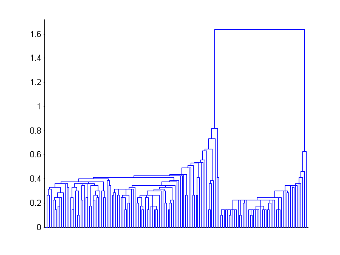